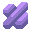

该星球生物死亡后骨架逐渐于矿物融合的产物,硬而脆.
这颗星球上比常见的金属,用途很广泛.
含有一定量生物质的沙子,在格雷迪锡上十分常见.
该星球虫族的主要组织成分,也许借助它我们可以组建自己的虫族军队.
不是那么常见的矿物资源，适合做很多坚固的建筑的原料
一种位于地下的矿物,只有少许会露出在地表,具有较强的放射性,可以用来制作反应堆燃料棒
生物质和镍相互融合而成的产物.硬度和韧度都远超常规材料.
直接冶炼有机质沙而得到的产物.相比于普通硅,它有着更高的硬度和韧性.
简单的砜类有机物,用于制造燃烧弹.

强碱性的氢氧化物,会使接触到的大分子有机物解离